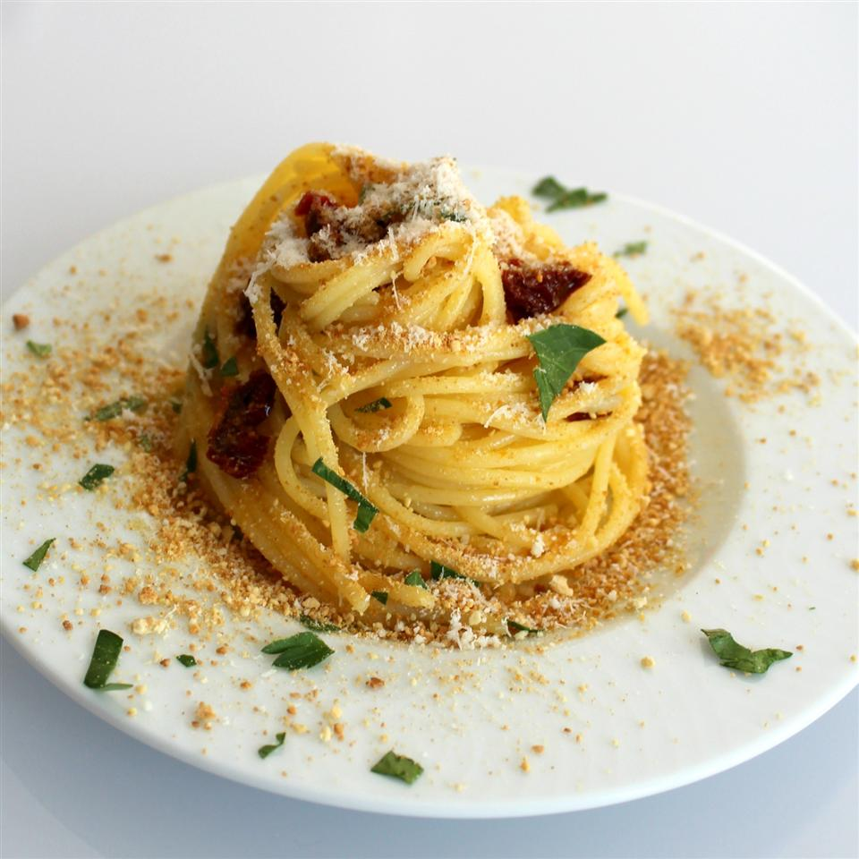

Sicilian Spaghetti

Description
If you love anchovies and pasta, this recipe is for you.
It's quick, easy and very tasty. Serve with crusty Italian bread, if desired.
Ingredients
- 1 pound spaghetti
- 4 tablespoons olive oil
- 3 cloves garlic, crushed
- 1 (2 ounce) can anchovy fillets, chopped
- 1 cup fine bread crumbs
- 1 cup chopped fresh parsley
- ground black pepper to taste
- 4 tablespoons freshly grated Parmesan cheese
Steps
- Bring a large pot of lightly salted water to a boil. Add pasta and cook
for 8 to 10 minutes or until al dente; drain.
- Meanwhile, in a medium skillet, heat olive oil over medium heat and
add garlic and anchovies to cook for about 2 minutes; stir constantly.
- Meanwhile, in a medium skillet, heat olive oil over medium heat and
add garlic and anchovies to cook for about 2 minutes; stir constantly.
- Toss anchovy sauce with hot pasta and sprinkle with cheese; serve.